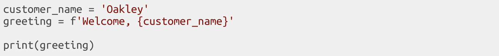
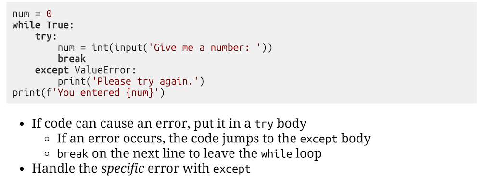

Python Tools, Functions, and Methods
- Comments start with #.
- type() will tell you the data type of any value you pass in to it.
- input() prompts the user for input and stores their input in a variable as a string value.
- ord() will give you the ordinal (ASCII) value of any character value you pass in to it.
- chr() will give you the character value of any ordinal value you pass in to it.
- range() accepts a number as its argument and returns a non-inclusive sequence of numbers to loop over.
- .lower() is a string method that does not mutate the original string; it returns a lowercase copy of the original string.
- .upper() is a string method that does not mutate the original string; it returns an uppercase copy of the original string.
- Python supports negative indexing :D [-1] will return the last character in a string.
Declaring f-strings
Python REPL
Stands for Read, Evaluate, Print, Loop. REPLs exist for many languages.
Prompts and runs code over and over.
To run scripts in the REPL, run import filename(your_file.py).
"Falsy" values in Python
- The number 0.
- None type.
- "" Empty String.
- [] Empty List.
- {} Empty Set.
- All other values are "Truthy".
Python Errors
Use try and except keywords to handle errors in Python and ensure good user input.
If code can cause an error, put it in a try body. Use except to handle specific errors.
Traceback lets you know you've got an error somewhere in your code.
NameError is an error that is the result of an issue with variable labels.
TypeError is an error that is the result of an issue with variable values.
Links
⛓ PYTHONTUTOR.COM IS AWESOME!